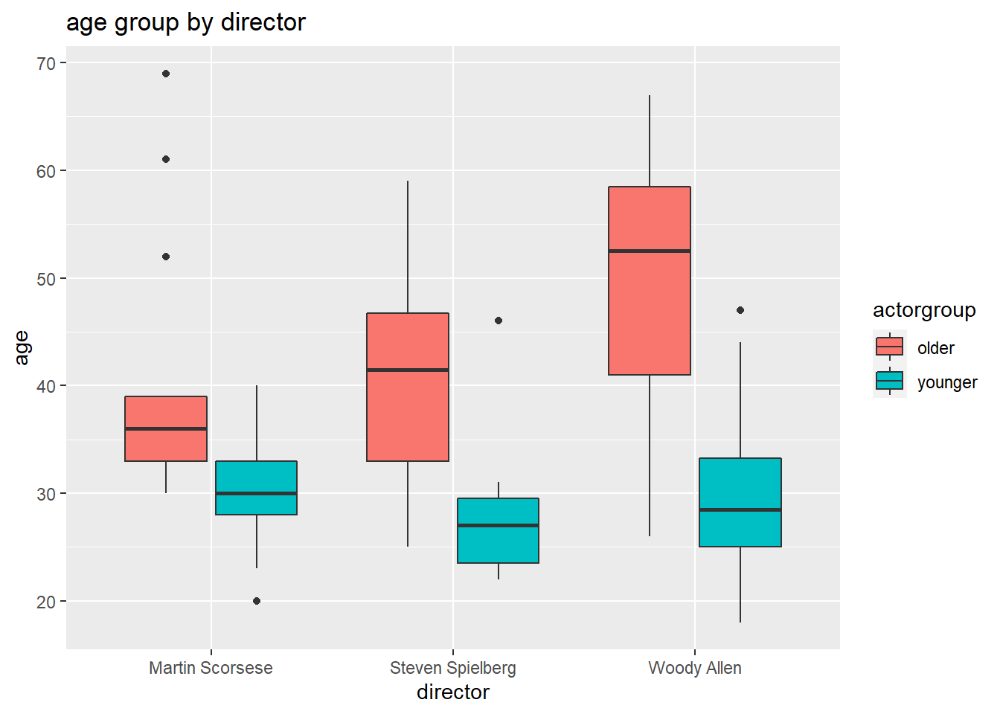

# Get the Data# Read in with tidytuesdayR package # Install from CRAN via: install.packages("tidytuesdayR")# This loads the readme and all the datasets for the week of interest# Either ISO-8601 date or year/week works!library('tidytuesdayR')tuesdata <- tidytuesdayR::tt_load('2023-02-14')
--- Compiling #TidyTuesday Information for 2023-02-14 ----
--- There is 1 file available ---
--- Starting Download ---
Downloading file 1 of 1: `age_gaps.csv`
--- Download complete ---
tuesdata <- tidytuesdayR::tt_load(2023, week =7)
--- Compiling #TidyTuesday Information for 2023-02-14 ----
--- There is 1 file available ---
--- Starting Download ---
Downloading file 1 of 1: `age_gaps.csv`
--- Download complete ---
age_gaps <- tuesdata$age_gaps
First we want to have a look at if there are some directors who generate multiple movies.
library(dplyr)
Attaching package: 'dplyr'
The following objects are masked from 'package:stats':
filter, lag
The following objects are masked from 'package:base':
intersect, setdiff, setequal, union
Here we can see that, base on the number of movies, Woody Allen, Martin Scorsese and Steven Spielberg are the top 3 directors.
Here we focus on thess three directors to explore our data.
We want to have a look at the age distribution among three directors.
library(tidyr)df <- age_gaps[which(age_gaps$director %in%c('Woody Allen','Martin Scorsese','Steven Spielberg')),]df1 <-gather(df,key='actorgroup',value='age',12:13) df1 %>%mutate(actorgroup=if_else(actorgroup=='actor_1_age','older','younger')) %>%ggplot( aes(x=director, y=age,fill=actorgroup)) +geom_boxplot()+ggtitle('age group by director')

Here we can see that, director Woody Allen like to choose aged older actor. From here, looks like age difference is biggest. So we would like to have a look at the difference.
Suggestion for script writer. Woody Allen prefer large age_difference than Martin Scorsese. So, if you have a script with large age_diffenence, go to talk to Woody Allen rather than Martin Scorsese. Woody Allen will have a higher chance to accept your script.
Here we can see that, there is no difference for actor age. No matter how old is the actor. You probably have same chance to be accepted by either these three directors. Don’t worry your age, you have same chance as older or younger actor.